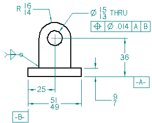
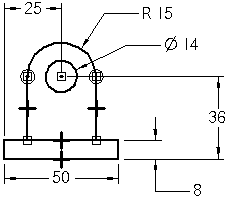

Creating 2D drawing views
A 2D drawing view consists of two-dimensional elements. It is not associative to a 3D model. A 2D drawing view allows you to quickly create or modify a drawing view without making changes to a part or assembly document.
To create a 2D drawing view of a part or assembly, you can convert a 3D model view to a 2D view, or you can draw the 2D graphics yourself. You also can import a 2D design file and then create 2D drawing views from it. You can layer 2D graphics on top of a 2D drawing view.
Whenever you add or edit 2D graphical elements, a full range of drawing tools is provided. These include drawing and relationship commands that make it easy for you to draw an accurate 2D representation of a part or assembly.

For more information about 2D drawing in Solid Edge, see the Drawing 2D elements Help topic.
Commands for creating a 2D drawing view
There are several commands related to creating a 2D view from existing graphics:
-
2D Model View command
 —Creates a 2D view that references geometry on the 2D Model sheet. Use the Drawing
Area Setup command, which is available only for the 2D Model sheet, to set up a scaled
work area.
—Creates a 2D view that references geometry on the 2D Model sheet. Use the Drawing
Area Setup command, which is available only for the 2D Model sheet, to set up a scaled
work area. -
Convert to 2D View command—Converts a 3D part view to 2D geometry. Once you convert a part view to a 2D view, associativity to the part or assembly document cannot be retrieved.
-
Draw In View command—Available for a 3D part, assembly, or sheet metal view placed on a working drawing sheet, and for a 2D view. This command opens the view for editing on the 2D Model sheet, so you can draw in the view and add annotations and dimensions at a 1:1 scale.

2D drawing scales
When drawing inside a 2D view placed on a working sheet, you typically work at 1:1 scale. You also can draw directly on the working sheet. If you decide later that you want to scale graphics you have drawn directly on the sheet, just move or copy them into a drawing view with the Cut, Copy, and Paste commands.
The dimension and annotation sizes on the working sheet are independent of the drawing view scale. For example, if you define the height and size of dimension text as 0.125 inches or 3.5 millimeters, these are the actual values of the dimension text on the printed drawing.

Using the 2D Model sheet
You also can work on the 2D Model sheet, which is the Solid Edge equivalent of AutoCAD 2D Model Space. In Solid Edge, however, you can use the Drawing Area Setup command to define a scaled work area where you can create, edit, and annotate a 2D design appropriate to the size of the part or assembly, yet print at a scale appropriate to the dimensions of your drawing sheet.
The Auto-Hide layer is available at all times when working on the 2D Model sheet.
Creating detail views from a 2D drawing view
You can use the Detail View command to create a dependent detail view from a 2D view or a part view that has been converted to 2D geometry. You can create a detail view that displays a circular envelope or a detail view with a custom boundary.
For more information, see the Detail views Help topic.
2D drawing views and associativity
If you set the Maintain Relationships option in the Relate group on the ribbon, the graphics you draw in a 2D drawing view can be updated associatively, similar to the profiles you draw in the Part environment. You can place driving dimensions and apply relationships to control the size and location of the elements.

Hiding construction graphics, dimensions, and annotations
When you want to hide elements in a drawing view but you do not want to assign the hidden elements to individual layers, you can use the Auto-Hide layer. You can hide construction geometry, dimensions, and certain annotations. For example, you can place dimensions on the 2D Model sheet Auto-Hide layer to drive the size of the geometry but not display when a drawing view is placed on the working sheet.
-
The Auto-Hide layer is available while you are drawing and dimensioning on the 2D Model sheet. You can use the 2D Model View command
to create a drawing view of the 2D Model sheet geometry, and all elements on the
Auto-Hide layer are hidden automatically. -
The Auto-Hide layer also is created automatically when you right-click a drawing view and choose the Draw In View command. When you close a Draw In View window, elements on the Auto-Hide layer are hidden automatically.